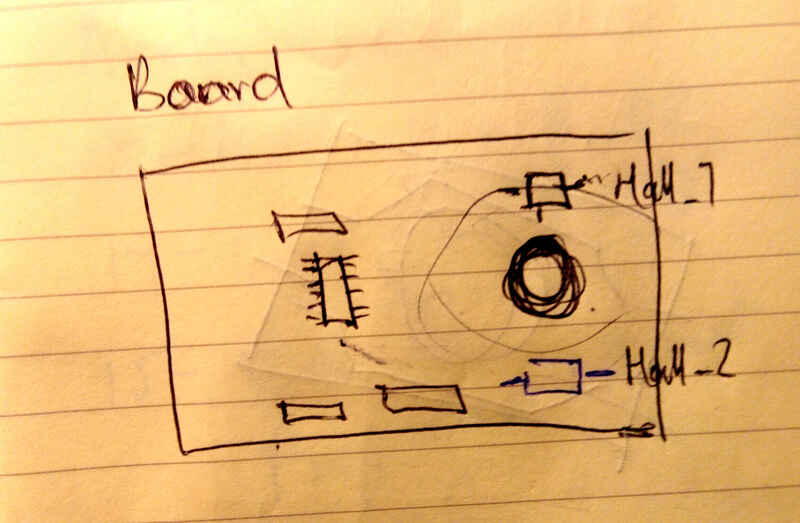
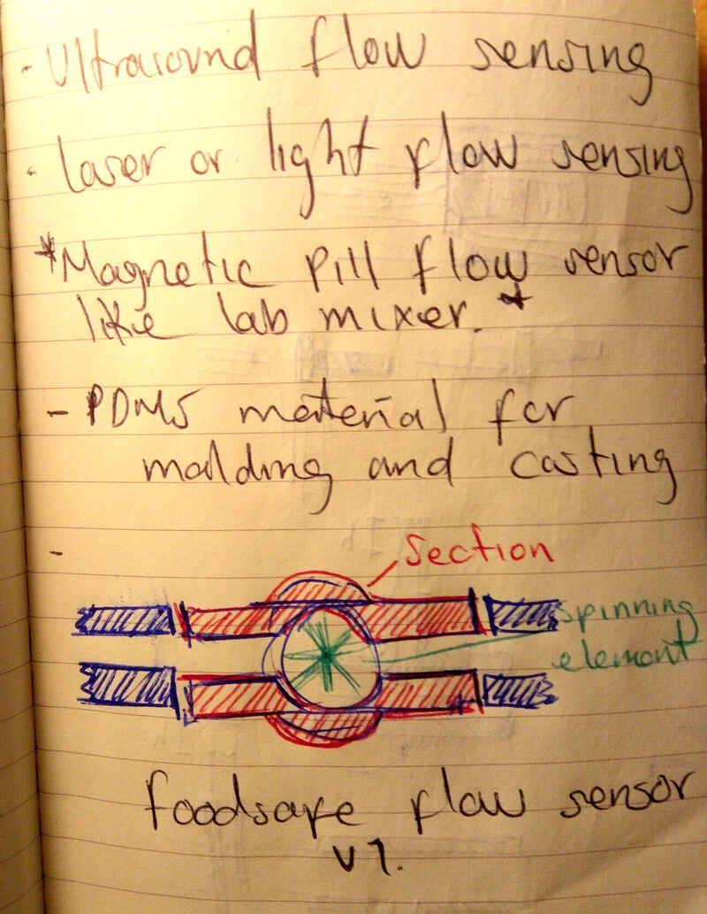
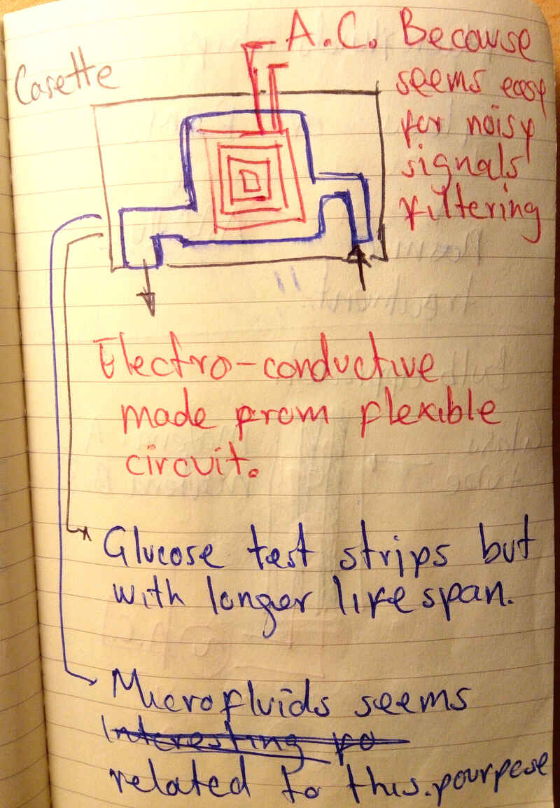
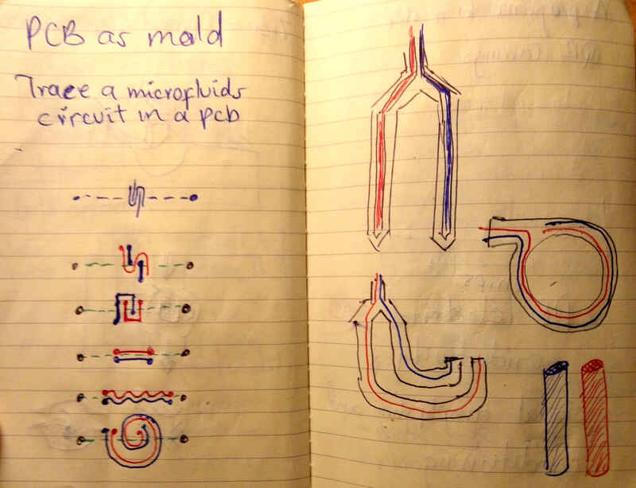
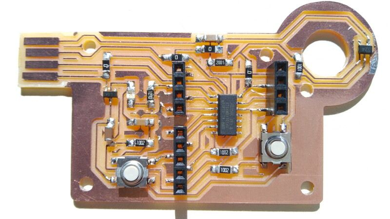

1. Principles and practices.¶
Context¶
You can find information about my project here.
I’ve read the fab charter and signed the student agreement.
Why?¶

Currently RFID is the preferred technology for farm animals identification, in Mexico this is something that has been unsuccessfully deployed due to multiple factors, but the most important one is supply chain and distribution.
RFID stands for Radio Frequency Identification, in animal identification it can be found as a earring, a collar or skin implant.
In Mexico the standard RFID earring is imported and then distributed, making it not accessible to small producers in rural areas, and they are the bast majority of producers making almost 60% of the country total production. Worldwide we can find the same situation in underdeveloped countries.

Idea¶
My idea is to design a RFID system that can be made on FabLabs and also an Milk Quality control sensor to measure protein/fat content and also somatic cells. Somatic cells are present as part of animals immune system, and some diseases can be prevented by counting somatic cells in the dairy production.
Objectives¶
First objective is to promote, sustainable farms that makes decisions based on data captured in the working field, to make a better use of natural resources and also all sort of different supplies. The indiscriminate use of hormones and antibiotics in animals is a problem that affects current disease control systems, producers financial viability and the consumer.
The second objective is to identify diseases while in the dairy production and apply the antibiotics on the affected animal. Currently most farmers apply vaccines periodically without any analysis and this makes vaccination an expensive activity that most producers avoid because of their current financial status.
About Spectroscopy¶
For measuring fat/protein in milk I’ve found spectroscopy as a viable solution. Currently they’re cheaper CHIPS like the AS7265x that can be used to classify previously measured fat/protein samples of milk based in their measured spectrum.
So one of the steps in this development will be to measure a variety of milk samples using the AS7265x and a laboratory standard spectrometer to correlate the results.
About UxD¶
The other important aspect I’m considering for this project is the interaction design. User-centered design for agriculture is an important topic, since most tools need an specialized trained professional to be used. In some places this will not be a problem, but in Mexico, in my region the technicians/animals is 3000 animals for each technician.
Project management table¶
| week01 | week02 | week03 | week04 | week05 |
|---|---|---|---|---|
| General and user research | ||||
| Proposals, Hardware, Software, Interaction | ||||
| Video demo | ||||
| First prototype, workbench test, feedback and rework | ||||
| Second prototype, Workbench test, field test, feedback and rework |
A comparison of current methods in Mexico and a Experimental farm in France:¶
This is the Farm in UniLaSalle Beauvais.
Project description:¶
Challenge:
To develop an affordable device for cow milk production measurement and quality checking.
Characteristics:
- Supply-chain reduced components.
- Food-safe components for the parts in contact with the milk.
- Adaptable to different countries and their local regulations or tech level.
Functions:
- Read RFID current existing earrings
- Meassure automatically ammount of milk produced for each animal on a production.
- Meassure a sample for milk quality control.
Parts:
- 4 Milk flow meter on for each cow’s udder.
- RFID earring reader.
- Spectral sensor for substance identification
- Dielectric spectroscopy sensor.
User:
- Field veterinary technicians.
- Dairy production managers.
- Researchers.
- Quality control technicians.
Sketches¶
- Hall effect circuit board sketch:

- Pipe milk conduct to fluid sensor connector:

- Flow sensor sketch 01:

- Flow sensor sketch 02:

- Microfluids sketch:

- Electrode design sketch:

Tests¶
- Testing SLA 3D printing, I would like to cast this pieces in food-safe silicone.

- This is my first attempt to make a circuit board with a hall effect sensor that I’ll use later for the flow sensor.

- This is a test of the ISO11784 RFID module that will be used to read Cow earrings.